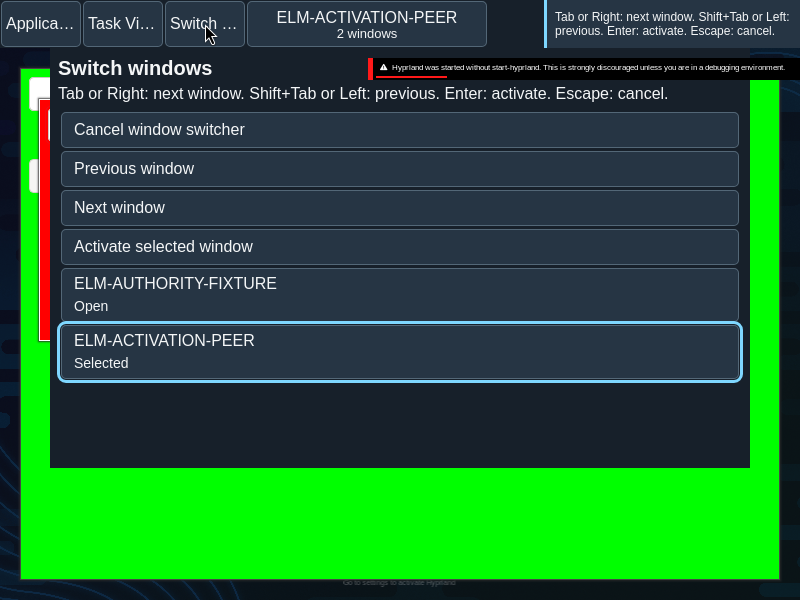

Window switcher
The window switcher traverses observed families without changing window focus while browsing.
Overview
The window switcher traverses observed families without changing window focus while browsing.
Anatomy
A listbox of family options precedes the separate Cancel, Previous, Next and Activate controls.
The listbox contains family options in activation-history order. A separate action group contains Cancel, Previous, Next and Activate; there are no thumbnail controls.
States
The candidate is distinct from the active application, observed focused window and keyboard focus. Details identify selected, open or minimized entries.
- Loading: activation history is being read.
- Candidate: the selected listbox option is the proposed destination.
- Active and focused: these are observed desktop facts, separate from candidate selection and keyboard focus.
Specimen
Real Elm interface. Simulated desktop. Client window interiors are fixtures. Load the desktop only when you want to explore this component.
Behavior
Cycle forward or backward, then commit the selected family or cancel. A stale publication cannot commit. The switcher does not show thumbnails.
For the native chord, hold Alt and press Tab for the next candidate or Alt+Shift+Tab for the previous candidate. Release Alt to activate; Escape cancels. In the local switcher, Tab or Right advances, Shift+Tab or Left goes back, Enter activates and Escape cancels. The visible Previous, Next, Activate and Cancel controls provide an in-page alternative when the browser or operating system intercepts a chord.
The chord traverses its admitted cohort; a newly arriving window does not silently replace a retired member. If the selected member disappears, selection moves to the next eligible member; an empty cohort dismisses.
Accessibility
Options expose selection independently of control focus. Visible controls provide an alternative when the operating system intercepts the shortcut.
Content
Use the source family names and state details. The candidate is not yet the focused window.
Use “selected” for the candidate and reserve “active” for the observed application state. Keep minimized detail with the corresponding family name.
Evidence
Unmodified captures of the running interface record the states below.

Try it
Explore window switcher in context on the simulated desktop.